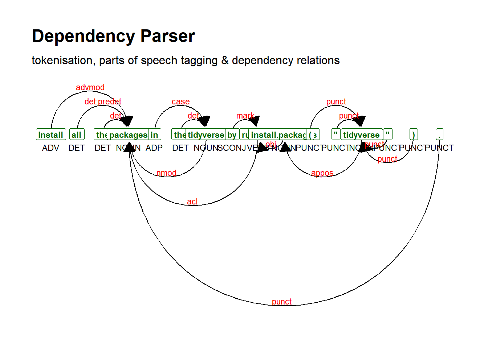

7.8 Single web page
7.8.1 Read_html
## {html_document}
## <html>
## [1] <head>\n<meta http-equiv="Content-Type" content="text/html; charset=UTF-8 ...
## [2] <body>\n <div id="appTidyverseSite" class="shrinkHeader alwaysShrinkHe ...Because the downloaded file contains a unnecessary information. We process the data to extract only the text from the webpage.
7.8.2 Extract headline
header_web_page <- web_page %>%
## extract paragraphs
rvest::html_nodes("h1") %>%
## extract text
rvest::html_text()
head(header_web_page)## [1] "Tidyverse packages"7.8.3 Extract text
web_page_txt <- web_page %>%
## extract paragraphs
rvest::html_nodes("p") %>%
## extract text
rvest::html_text()
head(web_page_txt)## [1] "Install all the packages in the tidyverse by running install.packages(\"tidyverse\")."
## [2] "Run library(tidyverse) to load the core tidyverse and make it available\nin your current R session."
## [3] "Learn more about the tidyverse package at https://tidyverse.tidyverse.org."
## [4] "The core tidyverse includes the packages that you’re likely to use in everyday data analyses. As of tidyverse 1.3.0, the following packages are included in the core tidyverse:"
## [5] "ggplot2 is a system for declaratively creating graphics, based on The Grammar of Graphics. You provide the data, tell ggplot2 how to map variables to aesthetics, what graphical primitives to use, and it takes care of the details. Go to docs..."
## [6] "dplyr provides a grammar of data manipulation, providing a consistent set of verbs that solve the most common data manipulation challenges. Go to docs..."7.8.4 Create a corpus
## Corpus consisting of 31 documents.
## text1 :
## "Install all the packages in the tidyverse by running install..."
##
## text2 :
## "Run library(tidyverse) to load the core tidyverse and make i..."
##
## text3 :
## "Learn more about the tidyverse package at https://tidyverse...."
##
## text4 :
## "The core tidyverse includes the packages that you’re likely ..."
##
## text5 :
## "ggplot2 is a system for declaratively creating graphics, bas..."
##
## text6 :
## "dplyr provides a grammar of data manipulation, providing a c..."
##
## [ reached max_ndoc ... 25 more documents ]7.8.4.1 Summary
## Corpus consisting of 31 documents, showing 10 documents:
##
## Text Types Tokens Sentences
## text1 13 16 1
## text2 19 20 1
## text3 9 9 1
## text4 24 31 2
## text5 37 50 3
## text6 22 29 2
## text7 30 46 3
## text8 40 51 3
## text9 45 57 3
## text10 48 64 37.8.5 Advanced manipulations
7.8.5.1 Tokens
tokens() segments texts in a corpus into tokens (words or sentences) by word boundaries.
We can remove punctuations or not
7.8.5.1.1 With punctuations
## Tokens consisting of 31 documents.
## text1 :
## [1] "Install" "all" "the" "packages"
## [5] "in" "the" "tidyverse" "by"
## [9] "running" "install.packages" "(" "\""
## [ ... and 4 more ]
##
## text2 :
## [1] "Run" "library" "(" "tidyverse" ")" "to"
## [7] "load" "the" "core" "tidyverse" "and" "make"
## [ ... and 8 more ]
##
## text3 :
## [1] "Learn" "more"
## [3] "about" "the"
## [5] "tidyverse" "package"
## [7] "at" "https://tidyverse.tidyverse.org"
## [9] "."
##
## text4 :
## [1] "The" "core" "tidyverse" "includes" "the" "packages"
## [7] "that" "you’re" "likely" "to" "use" "in"
## [ ... and 19 more ]
##
## text5 :
## [1] "ggplot2" "is" "a" "system"
## [5] "for" "declaratively" "creating" "graphics"
## [9] "," "based" "on" "The"
## [ ... and 38 more ]
##
## text6 :
## [1] "dplyr" "provides" "a" "grammar" "of"
## [6] "data" "manipulation" "," "providing" "a"
## [11] "consistent" "set"
## [ ... and 17 more ]
##
## [ reached max_ndoc ... 25 more documents ]7.8.5.1.2 Without punctuations
web_page_txt_corpus_tok_no_punct <- tokens(web_page_txt_corpus, remove_punct = TRUE)
web_page_txt_corpus_tok_no_punct## Tokens consisting of 31 documents.
## text1 :
## [1] "Install" "all" "the" "packages"
## [5] "in" "the" "tidyverse" "by"
## [9] "running" "install.packages" "tidyverse"
##
## text2 :
## [1] "Run" "library" "tidyverse" "to" "load" "the"
## [7] "core" "tidyverse" "and" "make" "it" "available"
## [ ... and 5 more ]
##
## text3 :
## [1] "Learn" "more"
## [3] "about" "the"
## [5] "tidyverse" "package"
## [7] "at" "https://tidyverse.tidyverse.org"
##
## text4 :
## [1] "The" "core" "tidyverse" "includes" "the" "packages"
## [7] "that" "you’re" "likely" "to" "use" "in"
## [ ... and 16 more ]
##
## text5 :
## [1] "ggplot2" "is" "a" "system"
## [5] "for" "declaratively" "creating" "graphics"
## [9] "based" "on" "The" "Grammar"
## [ ... and 29 more ]
##
## text6 :
## [1] "dplyr" "provides" "a" "grammar" "of"
## [6] "data" "manipulation" "providing" "a" "consistent"
## [11] "set" "of"
## [ ... and 12 more ]
##
## [ reached max_ndoc ... 25 more documents ]7.8.5.2 Compound words
7.8.5.2.1 kwic Phrase
web_page_txt_corpus_tok_no_punct_phrase <- kwic(web_page_txt_corpus_tok_no_punct, pattern = phrase("the tidy*"), window = 6)
head(web_page_txt_corpus_tok_no_punct_phrase, 10)## Keyword-in-context with 6 matches.
## [text1, 6:7] Install all the packages in | the tidyverse |
## [text3, 4:5] Learn more about | the tidyverse |
## [text14, 1:2] | The tidyverse |
## [text15, 9:10] as readr for reading flat files | the tidyverse |
## [text28, 8:9] provides the pipe > used throughout | the tidyverse |
## [text30, 3:4] Modeling with | the tidyverse |
##
## by running install.packages tidyverse
## package at https://tidyverse.tidyverse.org
## also includes many other packages with
## package installs a number of other
## It also provide a number of
## uses the collection of tidymodels packages7.8.5.2.2 Compounds
web_page_txt_corpus_tok_no_punct_comp <- tokens_compound(web_page_txt_corpus_tok_no_punct, pattern = phrase("the tidy*"))
web_page_txt_corpus_tok_no_punct_comp_kwic <- kwic(web_page_txt_corpus_tok_no_punct_comp, pattern = phrase("the_tidy*"))
head(web_page_txt_corpus_tok_no_punct_comp_kwic, 10)## Keyword-in-context with 6 matches.
## [text1, 6] Install all the packages in | the_tidyverse |
## [text3, 4] Learn more about | the_tidyverse |
## [text14, 1] | The_tidyverse |
## [text15, 9] readr for reading flat files | the_tidyverse |
## [text28, 8] the pipe > used throughout | the_tidyverse |
## [text30, 3] Modeling with | the_tidyverse |
##
## by running install.packages tidyverse
## package at https://tidyverse.tidyverse.org
## also includes many other packages
## package installs a number of
## It also provide a number
## uses the collection of tidymodels7.8.5.3 N-grams
N-grams are a subfamily of compound words. They can be named as “bi-grams”, “tri-grams”, etc. N-grams yield a sequence of tokens from already tokenised text object.
7.8.5.3.1 Multi-grams
The code below allows to obtain the sequences of consecutive compound words, with 2, 3 or 4 compound words.
web_page_txt_corpus_tok_no_punct_ngram <- tokens_ngrams(web_page_txt_corpus_tok_no_punct, n = 2:4) %>%
unlist() %>%
tolower() %>%
table()
## Top 10 rows
head(web_page_txt_corpus_tok_no_punct_ngram, 10)## .
## $_and $_and_< $_and_<_> <_> <_>_that
## 1 1 1 1 1
## <_>_that_can >_that >_that_can >_that_can_be >_used
## 1 1 1 1 1## .
## you’re_asking_for_r you’re_likely you’re_likely_to
## 1 1 1
## you’re_likely_to_use you’re_more you’re_more_likely
## 1 1 1
## you’re_more_likely_to your_current your_current_r
## 1 1 1
## your_current_r_session
## 17.8.5.3.2 Skip-grams
Skip-grams allow to obtain non consecutive n-grams
web_page_txt_corpus_tok_no_punct_ngram_skip <- tokens_ngrams(web_page_txt_corpus_tok_no_punct, n = 2:4, skip = 1:2)
## Top 10 rows
head(web_page_txt_corpus_tok_no_punct_ngram_skip[[1]], 10)## [1] "Install_the" "Install_packages" "all_packages"
## [4] "all_in" "the_in" "the_the"
## [7] "packages_the" "packages_tidyverse" "in_tidyverse"
## [10] "in_by"## [1] "the_in_by_install.packages"
## [2] "the_in_by_tidyverse"
## [3] "the_the_by_install.packages"
## [4] "the_the_by_tidyverse"
## [5] "the_the_running_tidyverse"
## [6] "packages_the_by_install.packages"
## [7] "packages_the_by_tidyverse"
## [8] "packages_the_running_tidyverse"
## [9] "packages_tidyverse_running_tidyverse"
## [10] "in_tidyverse_running_tidyverse"7.8.5.4 Dictionary
If you have a dictionary with various words that fall within a generic word (e.g., variants of pronunciation of a word), then you can look these up. Here, we will create a dictionary that we populate ourselves and we show how to use it to search for items
7.8.5.4.1 Create dictionary
dict_web_page_txt <- dictionary(list(tidy_family = c("tidy*", "ggplot**"),
r_packages = "*r"))
print(dict_web_page_txt)## Dictionary object with 2 key entries.
## - [tidy_family]:
## - tidy*, ggplot**
## - [r_packages]:
## - *r7.8.5.4.2 Token lookup
web_page_txt_corpus_tok_no_punct_dict_toks <- tokens_lookup(web_page_txt_corpus_tok_no_punct, dictionary = dict_web_page_txt)
print(web_page_txt_corpus_tok_no_punct_dict_toks)## Tokens consisting of 31 documents.
## text1 :
## [1] "tidy_family" "tidy_family"
##
## text2 :
## [1] "tidy_family" "tidy_family" "r_packages" "r_packages"
##
## text3 :
## [1] "tidy_family"
##
## text4 :
## [1] "tidy_family" "tidy_family" "tidy_family"
##
## text5 :
## [1] "tidy_family" "r_packages" "r_packages" "tidy_family"
##
## text6 :
## [1] "r_packages" "r_packages"
##
## [ reached max_ndoc ... 25 more documents ]7.8.5.5 Part of Speech tagging
Part-of-Speech tagging (or PoS-Tagging) is used to distinguish different part of speech, e.g., the sentence: “Jane likes the girl” can be tagged as “Jane/NNP likes/VBZ the/DT girl/NN”, where NNP = proper noun (singular), VBZ = 3rd person singular present tense verb, DT = determiner, and NN = noun (singular or mass). We will use the udpipe package
7.8.5.5.1 Download and load language model
Before using the PoS-tagger, we need to download a language model.
As you can see from typing ?udpipe_download_model, there are 65 languages trained on 101 treebanks from here
file_to_check <- "models/english-ewt-ud-2.5-191206.udpipe"
if (file.exists(file = file_to_check)){
m_english <- udpipe_load_model(file = "models/english-ewt-ud-2.5-191206.udpipe")
}else{
m_english <- udpipe_download_model(model_dir = "models/", language = "english-ewt")
m_english <- udpipe_load_model(file = "models/english-ewt-ud-2.5-191206.udpipe")
}7.8.5.5.2 Tokenise, tag, dependency parsing
We use the already tokenised text, with no punctuations.
web_page_txt_anndf <- udpipe_annotate(m_english, x = web_page_txt_corpus_tok_no_punct[[1]]) %>%
as.data.frame()
## inspect
head(web_page_txt_anndf, 10)## doc_id paragraph_id sentence_id sentence token_id token
## 1 doc1 1 1 Install 1 Install
## 2 doc2 1 1 all 1 all
## 3 doc3 1 1 the 1 the
## 4 doc4 1 1 packages 1 packages
## 5 doc5 1 1 in 1 in
## 6 doc6 1 1 the 1 the
## 7 doc7 1 1 tidyverse 1 tidyverse
## 8 doc8 1 1 by 1 by
## 9 doc9 1 1 running 1 running
## 10 doc10 1 1 install.packages 1 install.packages
## lemma upos xpos feats head_token_id dep_rel
## 1 install ADV RB <NA> 0 root
## 2 all DET DT <NA> 0 root
## 3 the DET DT Definite=Def|PronType=Art 0 root
## 4 packages NOUN NNS Number=Plur 0 root
## 5 in ADP IN <NA> 0 root
## 6 the DET DT Definite=Def|PronType=Art 0 root
## 7 tidyverse NOUN NN Number=Sing 0 root
## 8 by ADP IN <NA> 0 root
## 9 run VERB VBG VerbForm=Ger 0 root
## 10 install.package NOUN NNS Number=Plur 0 root
## deps misc
## 1 <NA> SpacesAfter=\\n
## 2 <NA> SpacesAfter=\\n
## 3 <NA> SpacesAfter=\\n
## 4 <NA> SpacesAfter=\\n
## 5 <NA> SpacesAfter=\\n
## 6 <NA> SpacesAfter=\\n
## 7 <NA> SpacesAfter=\\n
## 8 <NA> SpacesAfter=\\n
## 9 <NA> SpacesAfter=\\n
## 10 <NA> SpacesAfter=\\n7.8.5.5.3 Dependency parsing
## parse text
web_page_txt_corpus_sent <- udpipe_annotate(m_english, x = web_page_txt_corpus[[1]]) %>%
as.data.frame()
## inspect
head(web_page_txt_corpus_sent)## doc_id paragraph_id sentence_id
## 1 doc1 1 1
## 2 doc1 1 1
## 3 doc1 1 1
## 4 doc1 1 1
## 5 doc1 1 1
## 6 doc1 1 1
## sentence
## 1 Install all the packages in the tidyverse by running install.packages("tidyverse").
## 2 Install all the packages in the tidyverse by running install.packages("tidyverse").
## 3 Install all the packages in the tidyverse by running install.packages("tidyverse").
## 4 Install all the packages in the tidyverse by running install.packages("tidyverse").
## 5 Install all the packages in the tidyverse by running install.packages("tidyverse").
## 6 Install all the packages in the tidyverse by running install.packages("tidyverse").
## token_id token lemma upos xpos feats head_token_id
## 1 1 Install install ADV RB <NA> 4
## 2 2 all all DET PDT <NA> 4
## 3 3 the the DET DT Definite=Def|PronType=Art 4
## 4 4 packages packages NOUN NNS Number=Plur 0
## 5 5 in in ADP IN <NA> 7
## 6 6 the the DET DT Definite=Def|PronType=Art 7
## dep_rel deps misc
## 1 advmod <NA> <NA>
## 2 det:predet <NA> <NA>
## 3 det <NA> <NA>
## 4 root <NA> <NA>
## 5 case <NA> <NA>
## 6 det <NA> <NA>web_page_txt_corpus_sent_dplot <- textplot_dependencyparser(web_page_txt_corpus_sent, size = 3)
## show plot
web_page_txt_corpus_sent_dplot
7.8.5.6 Feature co-occurrence matrix (FCM)
Feature co-occurrence matrix (FCM) records the number of co-occurrences of tokens
7.8.5.6.1 Computing number of co-occurrences
web_page_txt_corpus_dfmat <- dfm(web_page_txt_corpus_tok_no_punct)
web_page_txt_corpus_dfmat_trim <- dfm_trim(web_page_txt_corpus_dfmat, min_termfreq = 5)
topfeatures_web_page_txt_corpus <- topfeatures(web_page_txt_corpus_dfmat_trim)
topfeatures_web_page_txt_corpus## to the and a for of tidyverse data
## 37 30 21 21 21 20 15 15
## with in
## 15 13## [1] 257.8.5.6.2 Features co-occurrences
## Feature co-occurrence matrix of: 25 by 25 features.
## features
## features the packages in tidyverse to and it more that data
## the 22 24 23 30 45 21 9 16 10 15
## packages 0 2 10 15 10 5 0 3 4 4
## in 0 0 3 15 18 12 3 4 6 13
## tidyverse 0 0 0 6 13 7 3 5 5 5
## to 0 0 0 0 27 45 17 19 19 30
## and 0 0 0 0 0 8 9 11 12 17
## it 0 0 0 0 0 0 0 3 3 6
## more 0 0 0 0 0 0 0 2 4 2
## that 0 0 0 0 0 0 0 0 1 8
## data 0 0 0 0 0 0 0 0 0 7
## [ reached max_feat ... 15 more features, reached max_nfeat ... 15 more features ]